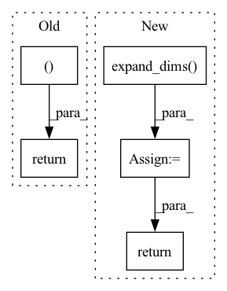

Pattern ID :15851
Before Change
img /= 255.0
img -= np.array([0.485, 0.456, 0.406]).reshape(3, 1, 1)
img /= np.array([0.229, 0.224, 0.225]).reshape(3, 1, 1)
return img, np.zeros((1, 5))
class MosaicTransform:
def __init__(self, degrees=10.0, translate=0.1, mosaic_scale=(0.5, 1.5), mixup_scale=(0.5, 1.5),After Change
labels = targets[:, 4].copy()
boxes = xyxy2cxcywh(boxes)
labels = np.expand_dims( labels, 1)
targets_t = np.hstack((labels, boxes))
padded_labels = np.zeros((self.max_labels, 5))
padded_labels[range(len(targets_t))[:self.max_labels]] = targets_t[:self.max_labels]
return img, padded_labels
class MosaicTransform:In pattern: SUPERPATTERN
Frequency: 4
Non-data size: 5
Instances Fragment ID: 53613779
Project Name: iywie/pl_yolo
Commit Name: e9ae43597f7f54ee3c00a38e634801550aa0f8ba
Time: 2022-02-20
Author: zhouyw96@outlook.com
File Name: data/data_augments.py
M Class Name: ValTransform
N Class Name: ValTransform
M Method Name: __call__(4)
N Method Name: __call__(4)
M Parent Class:
N Parent Class:
M File Name: data/data_augments.py
N File Name: data/data_augments.py
M Start Line: 82
M End Line: 86
N Start Line: 83
N End Line: 96
Before Change
indx = t >= t_s
k_t[indx] += deltas[s]
m_t[indx] += gammas[s]
return k_t * t + m_t
def make_future_dataframe(history_dates, periods, freq="D", include_history=True):After Change
past_changepoint = np.expand_dims(t, 1) >= np.expand_dims(changepoints_t, 0)
segment_id = np.sum(past_changepoint, axis=1) - 1
k_t = np.ones((len(t), 1)) * np.expand_dims( k, 0)
m_t = np.ones((len(t), 1 )) * np.expand_dims(m, 0)
k_t = np.squeeze(k_t[np.arange(len(t)), segment_id])
m_t = np.squeeze(m_t[np.arange(len(t)), segment_id])
trend = k_t * t + m_t
return trend
def piecewise_linear_prophet(t, k, m, deltas=None, changepoints_t=None): Fragment ID: 53613782
Project Name: ourownstory/neural_prophet
Commit Name: 8dcdd6a5e564ef4412c327d2550025a5647b63a6
Time: 2020-05-22
Author: oskar.triebe@merantix.com
File Name: code/utils.py
M Class Name: AnonimousClass
N Class Name: AnonimousClass
M Method Name: piecewise_linear(4)
N Method Name: piecewise_linear(5)
M Parent Class:
N Parent Class:
M File Name: code/utils.py
N File Name: code/utils.py
M Start Line: 21
M End Line: 47
N Start Line: 51
N End Line: 62
Before Change
box[:, 3] -= box[:, 1]
return box
ret = coco_mask.iou(to_xywh(box_a), to_xywh(box_b), np.zeros((len(box_b)return ret.astype("float32")
@dataclassAfter Change
intersect = intersection(boxes1, boxes2)
area1 = area(boxes1)
area2 = area(boxes2)
union = np.expand_dims(area1, axis=1) + np.expand_dims(
area2, axis=0) - intersect
return intersect / union
def iou(boxes1: npt.NDArray[float32], boxes2: npt.NDArray[float32]) -> npt.NDArray[float32]: Fragment ID: 53613781
Project Name: deepdoctection/deepdoctection
Commit Name: 39d5a9efc3b8ede6bcfc63bab84e757b6f394ce1
Time: 2022-05-30
Author: jm@drjanismeyer.de
File Name: deepdoctection/datapoint/box.py
M Class Name: AnonimousClass
N Class Name: AnonimousClass
M Method Name: np_iou(2)
N Method Name: np_iou(2)
M Parent Class:
N Parent Class:
M File Name: deepdoctection/datapoint/box.py
N File Name: deepdoctection/datapoint/box.py
M Start Line: 50
M End Line: 52
N Start Line: 112
N End Line: 118
Before Change
masks = [
np.array(Image.fromarray(m).resize((width, height), Image.NEAREST)) for m in masks
]
return frames, masks
class RandomCrop(object):
def __init__(self, parameters):After Change
frames = [
np.array(Image.fromarray(f).resize((width, height), Image.BILINEAR)) for f in frames
]
depths = [
np.expand_dims( np.array(
Image.fromarray(d.squeeze()).resize((width, height), Image.BILINEAR)),
axis=2) for d in depths
]
masks = [
np.array(Image.fromarray(m).resize((width, height), Image.NEAREST)) for m in masks
]
return frames, depths, masks
class RandomCrop(object): Fragment ID: 53613786
Project Name: hzxie/rmnet
Commit Name: f2f1bb1173f92817fb43222e870a07e61add9c76
Time: 2020-05-08
Author: root@haozhexie.com
File Name: utils/data_transforms.py
M Class Name: Resize
N Class Name: Resize
M Method Name: __call__(4)
N Method Name: __call__(3)
M Parent Class: object
N Parent Class: object
M File Name: utils/data_transforms.py
N File Name: utils/data_transforms.py
M Start Line: 148
M End Line: 154
N Start Line: 131
N End Line: 155